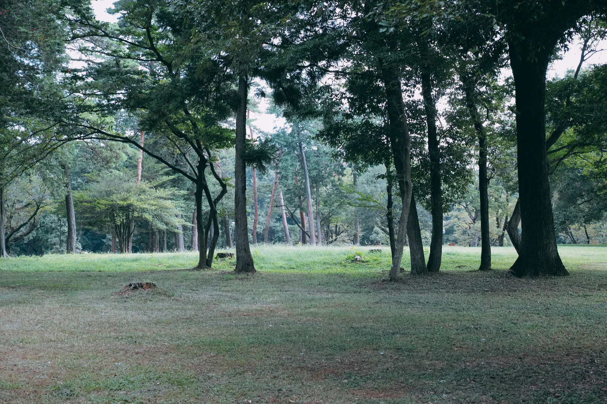

キラキラ共和国の自然風景
キラキラ共和国の基本情報
- 面積:23064000km²
- 人口:約1兆人(99999 億)
- 首都:ワンワン市
- 民族:エクスクラメーションマーク族
- 公用語:二フォン語
- 宗教:インターネットヒンドゥー教
- ※このサイトはフィクションです
キラキラ共和国の詳細マップ
州一覧
| 番号 | 州の名前 | 主な都市(あれば) | 観光名所(あれば) | 特産品(あれば) | その他 |
|---|---|---|---|---|---|
| 1 | ワンワン州 | ワンワン市(首都) | ホグワーツ魔法魔術学校 | 野菜ジュース | 政治区 |
| 2 | 丫(あげまき)州 | じゃん県 | タイムマシン | 自転車のサドル | 国民は漢字を使えないのでワイ州だと思っている |
| 3 | 丿乀(へつほつ)州 | ハ県 | 甲殻類出土地域 | USBケーブル | 国民は漢字を使えないのでハ(は)州だと思っている |
| 4 | 丱(あげまき)州 | わんだほーい市 | エンジェルてれん像 | 黒糖ヨーグルト | あげまき州が２つあることに国民は気づいていない |
| 5 | バコン州 | 四日市市市 | 警察学校 | 偽札 | 経済特区 |
| 6 | おはよう州 | ロンドン市 | きゃりーぱみゅぱみゅ博物館 | MDMA | 飲酒運転がブーム、よくビルが崩れる |
| 7 | 東京州 | ゴロンゴロン保護区域 | 歌舞伎町 | ジェネラルアポキシス | 選挙ギャルズが住んでいて、北朝鮮の音楽が町中に流れてる |
| 8 | うーたん州 | うーたん市 | BWK湖 | 青酸カリ | 経済特区、一番人口が多い |
| 9 | コンポタ州 | 千年樹の霊峰村 | ハイラル城跡地 | 水素爆弾 | EDMガンガンかけてリョウさんとエナドリ片手に踊りくるい ながらバイトしているという目撃情報が多数 |
| 10 | かつかい州 | 君が代村 | 寿司たべたいランド | 核融合爆弾 | 毎日ハロウィンが行われている |
| 11 | マイケルクリントン州 | サイキッ区 | 安倍晋三の銅像 | 法令に違反するトランシーバー | 料理に多量の睡眠薬が混ぜているレストランが横行 |
| 12 | あ州 | あ市 | あ村 | あいす | あ |
| 13 | インターネットやめろ州 | オーバードーズ県 | グーグル本社 | フリッパー | |
| 14 | ボッチャ州 | レノアハピネス市 | ケツワープ体験場 | ねるねるねるねの２番の粉 | |
| 15 | ファイナルラストアルティメット州 | 歳時記区 | you are an idiot記念公園 | ロシアンリポビタンD | |
| 16 | 九州 | 危険区域県 | 謁見室(10㎢) | ||
| 17 | デビルマン州 | パピルス市 | 春日競輪場 | ||
| 18 | ハミガキ州 | サンズ市 | 総合リゾート型施設 「ひふみ」 | 宗教区 | |
| 19 | K2州 | ウォルト・ディズニー区 | ワンワンディズニーランド | ワッキードッグ | ナイスクリームがブーム |
| 20 | クラムボン州 | ホイール町 | STARRY | ||
| 21 | 阿蘇山州 | 新幹線市 | ゴミ という(ユニクロをパクった) カス 服屋がある |
||
| 22 | ゴットン州 | いないいないばあ市 | IGU(偉業グレイト大学) | 宗教区 | |
| 23 | 再来州 | すいちゃん市 | 自然が多い | ||
| 24 | モンブラン州 | さくら市 | |||
| 25 | アンパン州 | 悪の帝王県 | |||
| 26 | ハワイ特別区 | わんたん市 | 似顔絵チャンネル(メタバース空間) | うーたん州に属する、北東の小島 現実ではなくメタバース空間に生きている |
|
| 27 | 国全体 | ワンワン市(首都) | 心臓破りの坂47というアイドルが有名 |
観光地
- 豊かな自然を感じることができ、キラキラ共和国の歴史も学べます。 
- 南国をたのしみたいならここ！
- オハイオから送られたししおどし アルミニウムとチタンでできてる。 緊急時には戦車になる。
you are an idiot記念公園
ハワイ特別区

ししおどし